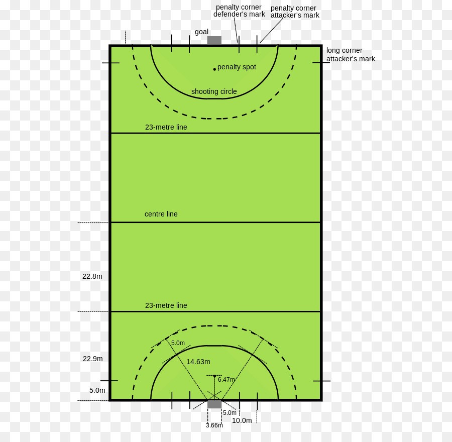
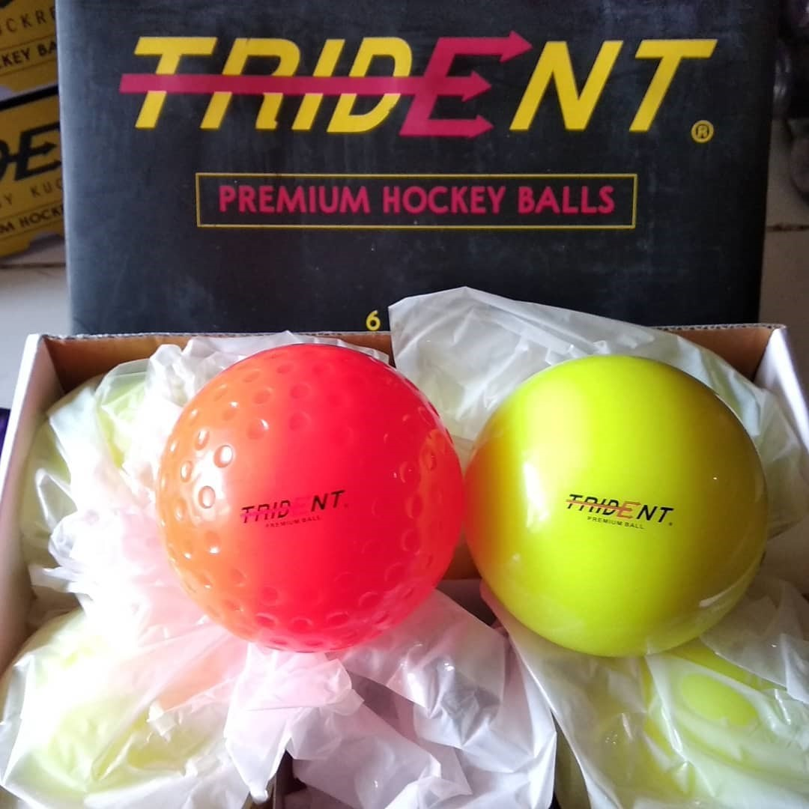
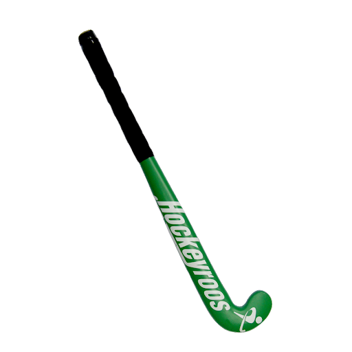
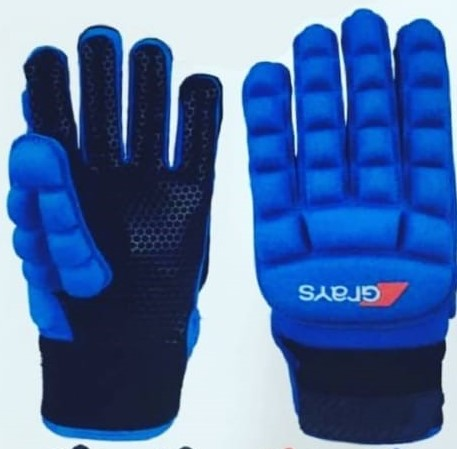
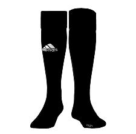
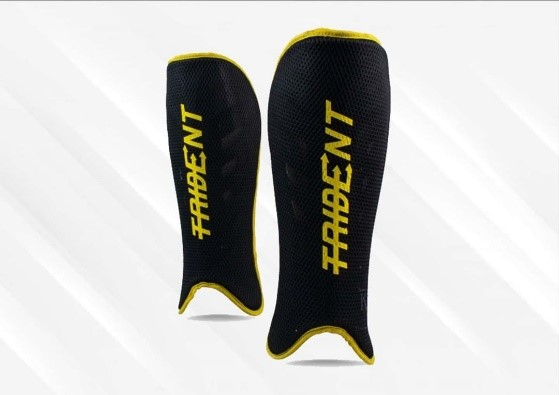
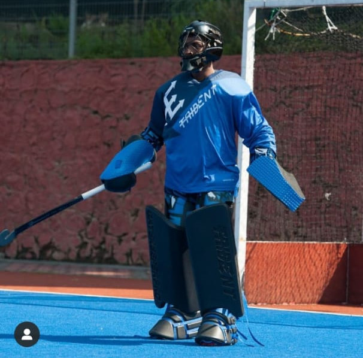

Pengertian
Hoki adalah olahraga dengan gaya permainan cepat, secepatnya mengumpan bola, sedikit mengolah bola, berlari secepatnya ke arah gawang lawan, dan berusaha memasukan bola ke gawang lawan. Dimainkan dengan menggunakan stik dan bola yang berukuran kecil, dengan cara di dorong atau dipukul. Dengan gaya permainan tersebut di atas, Hoki merupakan cabang olahraga yang membutuhkan banyak energi, sehingga para atlet dituntut untuk memiliki tingkat kondisi fisik yang baik untuk pencapaian prestasi optimal.
Hoki adalah olahraga yang kreatif, bahkan bisa lebih kreatif dari sepak bola. Berbeda dengan sepak bola yang dimainkan dengan bola berukuran besar yang digerakan dengan kaki dan seluruh tubuh kecuali tangan, hoki dimainkan dengan menggerakan bola yang sekecil bola tenis dengan stik selebar 5 cm yang bengkok ujungnya dan tidak boleh dipakai bolak balik (Primadi tabrani, 1985: 63).
Hoki adalah olahraga yang dimainkan oleh dua tim tujuan permainan ini adalah untuk memasukan bola ke gawang lawan, pukulan bola hanya boleh menggunakan stick hoki, tidak boleh ditendang, dilempar atau di lambungkan dengan anggota badan.
Mengenai olahraga hoki, menurut dokumen PHSI (dalam Cahya, 2016: 28) menjelaskan bahwa olahraga hoki adalah olahraga yang menggunakan alat berupa bola dan pemukul (stick) yang dimainkan pada lapangan rumput melalui teknik-teknik dasar dengan tujuan memasukkan bola sebanyak-banyaknya ke gawang lawan dari daerah lingkaran tembak dan mempertahankan gawang sendiri agar tidak kemasukan.
Sejarah
Ada banyak permainan kuno yang menonjolkan penggunaan bola dan elemen berbentuk tongkat tetapi dimainkan banyak orang. Hoki lapangan (field) berasal dari Mesir. Beberapa makam Mesir menggambarkan gambar permainan yang mirip dengan hoki yang berasal dari 4000 tahun yang lalu. di Ethiopia dimainkan sekitar 1.000 SM, sementara bentuk kuno permainan itu juga dimainkan di Iran sekitar 2.000 SM. Hoki modern berasal di Inggris karena dimainkan dan dikembangkan dalam sistem sekolah umum Inggris di awal abad ke-19. Pada tahun 1875 ada upaya untuk mengkonsolidasikan hoki sebagai olahraga formal dan asosiasi pertamanya didirikan. Pada 1886 asosiasi hoki "nyata" pertama kali dibuat di London. The Blackheath & Old Elthamians Hoki Club dipercaya sebagai klub tertua di dunia yang didirikan pada tahun 1861.
Olahraga hoki masuk ke Indonesia dilakukan oleh orang-orang Inggris dan Belanda. Peminatnya memang masih terbatas di kalangan mahasiswa, orang-orang Inggris, Belanda dan keturunan bangsa India. Pelopor hoki di kalangan bangsa Indonesia ialah pelajar-pelajar sekolah Guru Lembang di Bandung Hollandsch Inlandsche Kweekschool (HIK) sekitar tahun 1932 yang aktif mengadakan pertandingan-pertandingan di Jawa dan Sumatera.
Ketika organisasi-organisasi olahraga di tanah air tumbuh setelah diproklamasikan kemerdekaan RI, tahun 1954 atas prakarsa berbagai tokoh olahraga, yaitu Yusuf Ismail, Padmo Sumasto dan S. Asikin, didirikan top organisasi bernama Persatuan hoki Seluruh Indonesia, disingkat PHSI. Kemudian, pada tahun 1956 PHSI diterima menajdi anggota FIH dalam kongresnya di Melbourne, bertepatan dengan diselenggarakannya Olimpiade di Australia. Waktu itu, PHSI diwakili oleh Eddy Osman.
Kesempatan bagi Indonesia mengikuti turnamen-turnamen di luar negeri. Selanjutnya, dalam sejarah perhokian di Indonesia peranan PON sangat besar artinya, karena sejak PON ke II tahun 1951 hoki sudah dimasukkan dalam acara sebagai cabang olahraga yang dipertandingkan dalam setiap Pekan Olahraga Nasional setiap empat tahun sekali. Berturut-turut, data peserta cabang hoki dalam tiap PON adalah sebagai berikut : PON II tahun 1951 diikuti 5 daerah, PON III 1953 (6 daerah), PON IV 1957 (7 daerah), PON V 1961 (6 daerah). (Primadi tabrani, 1985: 63).
Organisasi Hoki
Organisasi Internasional
FIH (international Hockey federation) adalah Organisasi yang menaungi hoki di internasional. FIH berdiri pada Tahun 1924 di Paris didirikan oleh Paul Léautey. M. Léautey, yang kemudian menjadi presiden pertama FIH. Pada saat ini FIH dipimpin oleh Dr. Narinder DHRUV BATRA sebagai Presiden Dan Thierry Weil sebagai CEO (Chief Executive Officer).
Organisasi Asia Asia – ahf (asia hockey federation)
AHF (Asia Hockey Federation) merupakan induk organisasi hoki ditingkat Asia. AHF berdiri pada tahun 1958 di Tokyo, pada saat itu pertama kalinya hoki masuk kedalam Asian Games. Dan memiliki 5 negara anggota pada saat itu, yaitu, India, Jepang, Republik Korea, Malaysia dan Pakistan. Pada saat ini AHF dipimpin oleh Fumio Ogura sebagai President AHF dan Tayyab Ikram sebagai CEO. Pada Desember 2016, AHF terdiri dari 31 Asosiasi Nasional Anggota di semua wilayah benua.
Organisasi Nasional
Di Indonesia sendiri memiliki induk organisasi olahraga hoki yang cukup tua yaitu PHSI (Persatuan Hoki Seluruh Indonesia) berdiri pada tahun 1954 dengan di ketuai oleh dr. Ismail pada saat itu. 2006 PB PHSI diberikan sanksi oleh KONI Sanksi pemberhentian sementara keanggotaan PB PHSI sebagai anggota KONI, dengan alasan tidak adanya kegiatan yang dilaksanakan/diikuti. KONI Pusat mengeluarkan Keputusan berupa Pemberhentian Status Keanggotaan PB PHSI sebagai anggota KONI Pusat berdasarkan Keputusan Rapat Anggota KONI Pusat tahun 2007 Nomor 03/RA/2007.
Pada tanggal 24 Oktober 2009 difasilitasi oleh KONI Pusat, Masyarakat Hoki seluruh Indonesia membentuk Organisasi Hoki yang baru yaitu Federasi Hoki Indonesia. Dan pada 2014 dibentuklah kepengurusan pp fhi yang diketuai oleh Erizal Azhar
Sarana
1. Lapangan
Lapangan permainan berbentuk persegi panjang, dengan ukuran:
Sumber: (Kurniawan ,2012)
Ukuran Lapang Hoki
Sumber: (Kurniawan ,2012)
- Panjang lapangan : 91,40 meter
- Lebar lapangan : 55,00 meter
- Striking circle (penalty area) : 14,64 meter
- Penalty spot : 7,31 meter
- 25yd line : 22,87 meter
- Center line : 45,75 meter
2. Bola
Terbuat dari bahan yang keras dengan memiliki berat 156 gram sampai 163 gram (FIH 2015: 63).
Sumber: (GraysIndonesia)
3. Stik (Tongkat Pemukul)
Stick yang digunakan terbuat dari fibber atau kayu dengan permukaan rata (flat face), dan mempunyai pegangan (handle). Berat stick untuk wanita boleh kurang dari 12 ons dan tidak boleh melebihi 23 ons, untuk pria 28 ons. Stick penjaga gawang berbeda dengan stick pemain lain dengan ujung stick seperti membentuk bulatan (Kurniawan, 2012: 91).
Sumber: (GraysIndonesia)
4. Pelindung tangan (glove) ini digunakan di tangan kiri
Sumber: (GraysIndonesia)
5. Kaos kaki panjang
Sumber: (Kurniawan, 2012)
6. Pelindung tulang kering (Decker/Shin Guard)
Sumber: (GraysIndonesia)
7. Body protector penjaga gawang
Peraturan Pertandingan
Permainan hoki adalah permainan yang dipertandingkan oleh dua regu, yang terdiri dari 11 orang dari masing-masing regu (Kurniawan, 2012: 89).
Satu regu yang terdiri atas 11 pemain adalah sebagai berikut:
- 1. Penjaga gawang
- 2. Bek kanan
- 3. Bek kiri
- 4. Gelandang tengah
- 5. Gelandang kiri
- 6. Gelandanng kanan
- 7. Kanan luar
- 8. Kanan dalam
- 9. Penyerang tengah
- 10. Kiri dalam
- 11. Kiri luar
Peraturan umum dari permainan Hoki adalah sebagai berikut:
Seorang pemain dilarang untuk:
- a) Mengangkat stick di atas pundaknya bilamana dapat membahayakan.
- b) Melakukan permainan yang dapat membahayakan.
- c) Memukul bola ke udara.
- d) Menendang atau menahan bola dengan kaki (kecuali penjaga gawang sesuai peraturan).
- e) Memukul, menggigit atau menahan stick lawan.
- f) Menghalangi lawan dengan badan atau stick, mendorong lawan.
Seorang pemain diperbolehkan untuk:
- a) Menahan bola dengan tangan (sesuai peraturan yang berlaku), sepanjang bola tersebut jatuh dengan segera, jadi bukan menangkap bola melainkan menahan bola dengan telapak tangan yang terbuka.
- b) Di dalam D (striking circle) hanya penjaga gawang diperbolehkan bermain dengan kakinya, menendang dan menahan bola dengan bagian tubuh mana saja, tetapi tidak boleh berbaring di atas atau di depan bola.
Hukuman yang di berikan ialah:
- 1. Free hit/ pukulan bebas, Pukulan bebas dilakukan pada tempat dimana pelanggaran terjadi.
- 2. Penalty corner-corner, Penalty corner dapat dilakukan di atas garis pinggir gawang regu yang mendapat hukuman di sebelah mana saja, namun sekurang-kurangnya 2,75 meter dari tiang gawang terdekat. Penalty corner ini diberikan bilamana seorang diketahui dengan jelas menyentuh bola disebelah daerah gawang atau disebabkan sesuatu hal yang dilakukannya di dalam D atau striking circle.
- 3. Penalty stroke, Penalty stroke diberikan karena kesalahan yang dilakukan dalam D atau striking circle bila seseorang pemain yang bertahan dengan jelas menghalangi sebuah bola yang akan masuk dengan cara yang tidak dibenarkan. Penalty stroke dilakukan dari jarak 7,31 meter dari depan gawang. Pemain-pemain lainnya harus berada dibelakang garis 25 yard. Bilamana penjaga gawang dapat menahan bola maka regu yang bertahan diberikan pukulan bebas (free hit) dari suatu titik 14,63 meter dari gawang.
- 4. Corner Hit-Long Corner, Coner hit diberikan bilamana seorang pemain dengan tidak sengaja memukul atau memainkan bola kebelakang garis gawangnya dari jarak kurang dari garis 25 yard. Corner hit tersebut dilakukan dari jarak 9,14 meter dari tiang gawang terdekat. Untuk hit ini pemain-pemain dari regu yang menyerang harus berada di belakang garis D atau striking circle.
- 5. Hit in/ pukulan ke dalam, Bilamana seorang memukul atau menyentuh bola dengan sticknya melampaui garis pinggir, hit ini dilakukan di atas garis oleh seorang pemain lawan dari tempat dimana bola itu keluar lapangan. Pemain-pemain lain dengan sticknya harus berada sekurang-kurangnya dalam jarak 4,55 meter dari yang memukul bola.